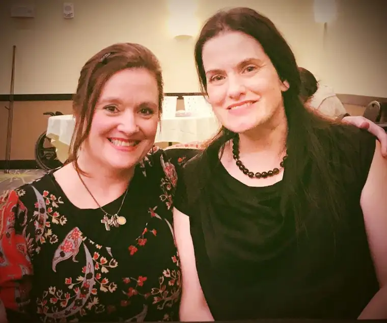

I’d heard her talk before on YouTube videos, Catholic radio, and through her words on Twitter. I’ve known for some time about the powerful story of how she survived a saline abortion, living against all the odds — through a procedure meant to burn her alive from the inside-out — just as she continues to do each day in her journey as a Christian with cerebral palsy.
But it was another thing entirely to have her in my hometown and hear her story in person. Afterwards, when I was able to speak with her for a few moments, I wasn’t expecting how deeply penetrating her blue eyes would be, or how they would repeat the story of her beautiful and bold life, not just to my ears, but to my soul.

For those who don’t know about Gianna Jessen, her story is all over the Internet; a quick Google search will get you what you need to know about this daughter of the risen Lord, whose entire being manifests God’s love and speaks mightily of the hope he wishes to bestow in us all. I’ll share a little of that, too, but I also want to offer something more personal — the gift Gianna gave me when I mentioned how I understand what it feels like to be persecuted for one’s faith, especially in relation to my ministry as a sidewalk advocate at our state’s only abortion facility.
Gianna was intent as she processed my words, then responded with just as much intention as she directed me verbally to Ephesians 6, encouraging me to get my armor in place and stay strong. As she spoke, I could tell she’d pondered these verses herself, many times over.
Beginning with verse 14, we read: “Stand firm then, with the belt of truth buckled around your waist, with the breastplate of righteousness in place,15 and with your feet fitted with the readiness that comes from the gospel of peace.16 In addition to all this, take up the shield of faith, with which you can extinguish all the flaming arrows of the evil one.17 Take the helmet of salvation and the sword of the Spirit, which is the word of God. 18 And pray in the Spirit on all occasions with all kinds of prayers and requests. With this in mind, be alert and always keep on praying for all the Lord’s people.”
Gianna’s entire presentation that evening, given for the benefit of our local pregnancy-help clinic, had been based on those inspired words. Flanked by two strong, handsome men, she’d talked about why she stands rather than sits, despite her equilibrium being off.
“You might be thinking, ‘Why don’t you just sit down? ‘It’s logical,” she began. “But if you believe you have an enemy in your soul who’s been there since your conception…and you have been vexing him…and you read (in God’s word), ‘Having done all to stand…’ What do you do? You vex him more. Because this is a spiritual battle, ladies and gentleman. And we also prove, at the same time, that chivalry isn’t dead! Amen!”

She spoke, too, about why she’s so blunt, and why we all should be, in love. “Having a disability teaches you a whole lot, including that you don’t have a whole lot of energy except to be honest, so my goal is not to offend you,” she said, but, “we need to get better at disagreeing with each other in this culture, and disagree beautifully instead of storming off and shutting off the conversation.”
Gianna also talked about God’s hand in her life, and how he’d reached in time and time again to steady her, from the very beginning.
When the abortion didn’t work, it was a nurse who followed God’s lead and saved Gianna. “So I was born in an abortion clinic not a hospital; that’s kind of a big deal,” she said, later noting that if the doctor had been to work on time, her life would have ended in “strangulation, suffocation or leaving me there to die.”
From there, she was taken to the hospital, where medical staff said there was no way she’d live. “And then,” Gianna said, “I just kept living, and so after several months of my ‘dying,’ every doctor finally said, ‘This baby girl doesn’t want to die.’ That would be correct sir.”
A year after she was born, Gianna said, she was called in as an expert witness for a trial of an abortionist who’d been caught strangulating a baby who’d survived an abortion. A reporter who’d been at the trial later shared about that day with her, telling Gianna how alert she’d been, and how the abortionist, testifying that babies do survive abortions, had said, “I had four survivors, and I was able to kill three of them, but I wasn’t able to kill Gianna.”
“If he were here now,” Gianna remarked, “I would say, ‘Hello sir, could you please give me your arm to help steady me?'” adding, “Bitterness is a great way to die early. It’s a waste of time.”
Gianna’s story, as it may be clear now, isn’t about death, but life, and the tenacity of it — how we cling to it, despite the odds.
“My life began totally impossible. And I am on a mission to live the impossible,” she said. “I don’t want to just talk about Jesus. I want to have a life so lit up with impossible things that he cannot be denied.”
Gianna reminded me of so many good things, but most of all, that our God is a God of life, and being so, will do anything to keep us living and growing toward him day by day, despite the obstacles. In fact, all the more because of the obstacles. And that through the power of his grace, we are all unstoppable, for the benefit of the kingdom.
Despite all she’s overcome, because of what she does each day, just in the very act of being, Gianna needs prayer. I hope you will join me in offering some for her today. And, as she said, be grateful for the many gifts God gives you, even in the “simple” ability to walk from one side of the room to the other without assistance.
Q4U: What obstacles have you overcome with God’s grace?